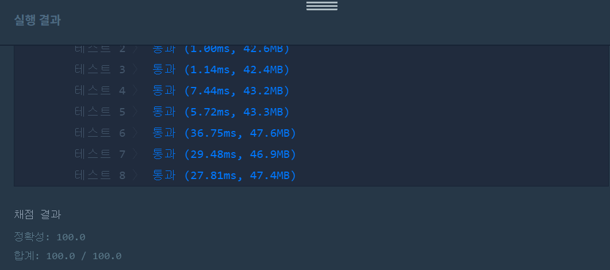

👀 문제
https://programmers.co.kr/learn/courses/30/lessons/43236
👊 도전
1. 설계
- 바위 사이의 최소거리를 이분탐색으로 찾는다.
- 바위 간의 거리가 mid보다 작으면 제거(카운트), 크다면 마지막 바위값을 저장하여 다음 바위와 거리 비교가 가능하게 한다.
- 카운트>n이면 mid가 큰 것이므로 줄이고, 반대면 늘린다.
- answer에는 mid들 중 최댓값을 저장한다.
2. 구현 (성공 코드)
1
2
3
4
5
6
7
8
9
10
11
12
13
14
15
16
17
18
19
20
21
22
23
24
25
26
27
28
29
30
31
32
33
34
import java.util.*;
/**
*
* @author HEESOO
*
*/
class Solution {
public int solution(int distance, int[] rocks, int n) {
int answer = 0;
Arrays.sort(rocks);//이분탐색할 때는 정렬을 해야함
int left=1;
int right=distance;
int remove=0;//제거한 바위갯수
int mid;//바위사이의 최소 거리
int lastRock=0;//마지막 바위
while(left<=right){
mid=(left+right)/2;
for(int i=0;i<rocks.length;i++){
if(mid>rocks[i]-lastRock) remove++;
else lastRock=rocks[i];
}
if(distance-lastRock<mid) remove++;//마지막바위와 도착지간의 거리 체크
if(remove>n) right=mid-1;
else{
answer=Math.max(answer, mid);
left=mid+1;
}
remove=0;
lastRock=0;
}
return answer;
}
}
3. 결과
 🤟 성공 🤟
4. 설명
- 바위 사이의 최소 거리를 이분탐색으로 구한다.
- 이분탐색을 하기 위해서는 배열 정렬은 필수다.
- 바위 사이의 최소 거리를 mid로 정해놓고, 이보다 작다면 최소 거리라 가정한 mid에 반례이므로 제거한다.
- 바위를 제거할 경우 다음 바위에서 비교할 이전 바위의 값을 알고 있어야하므로 lastRock을 두어 제거하지 않았을 경우 현재까지 중에서 마지막인 바위값을 저장한다.
- 마지막 바위와 도착지까지의 거리도 mid와 비교해야하므로 for문 다음에 if문을 추가한다.
- 제거한 바위 갯수 remove가 n보다 크다면 거리 mid가 크다는 뜻이므로 줄이고, 반대라면 늘린다.
- answer에는 remove<=n일때 최댓값을 저장한다.
👏 해결 완료!
remove==n일때만 저장해야하는거 아닌가, 근데 그러면 테스트에서 틀린다. 아직 이유를 모르겠다.
참고
- 이분탐색 > 징검다리 https://dokrsky.tistory.com/81
- 이분탐색(binary search) https://webfirewood.tistory.com/108